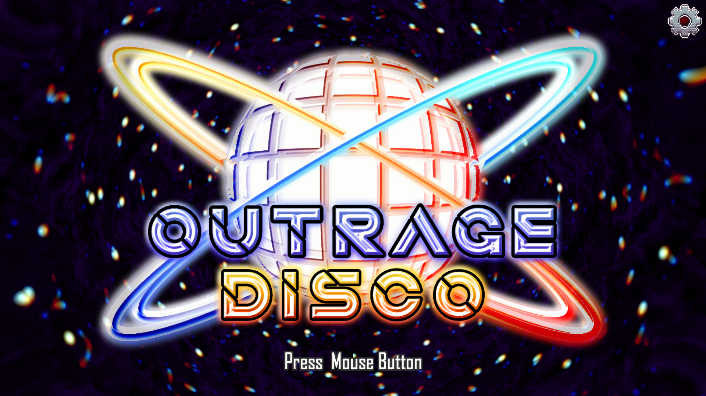
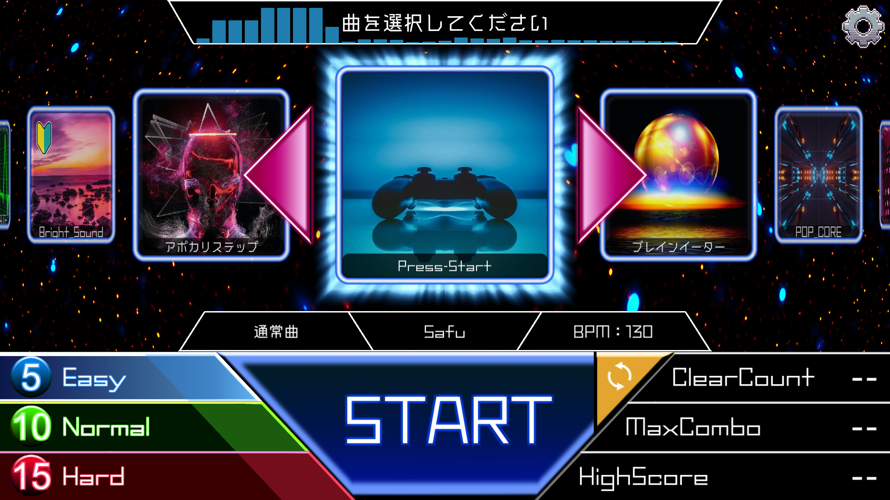
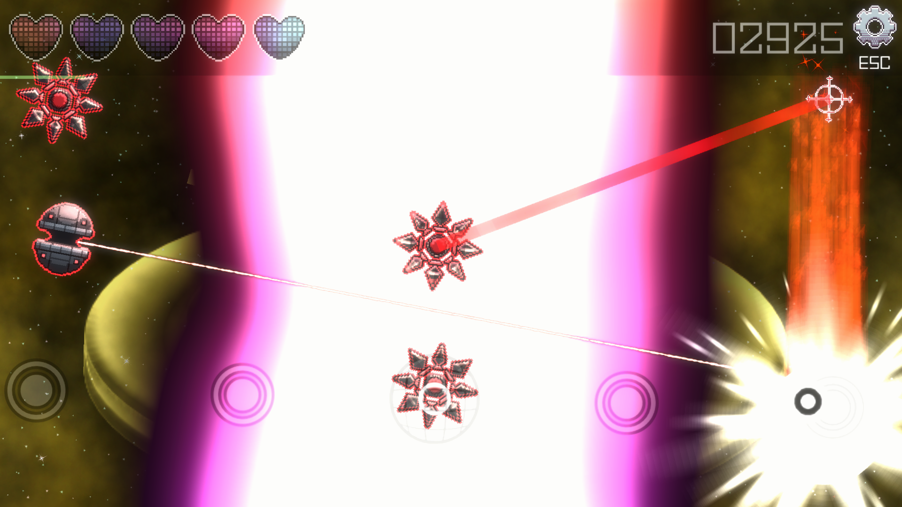
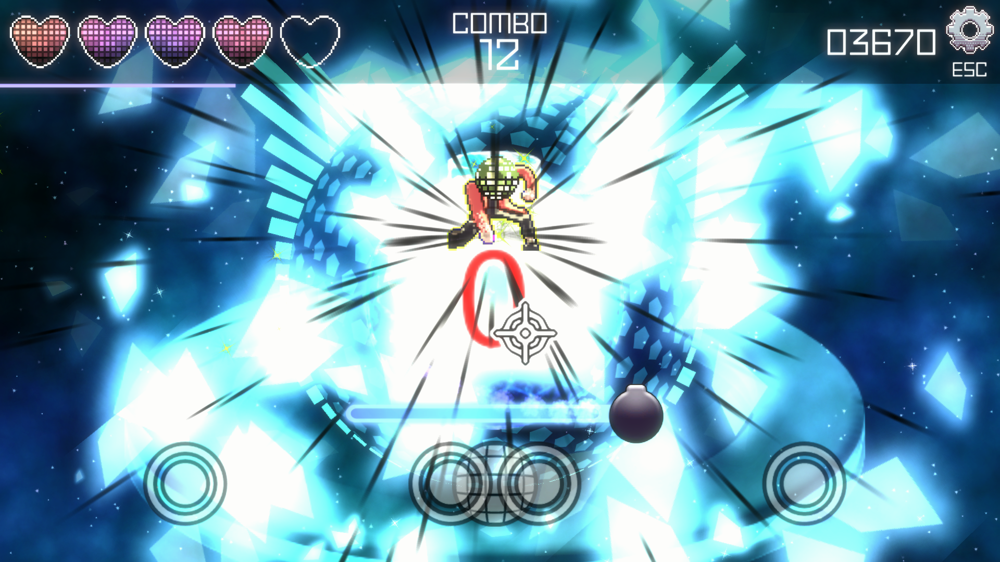
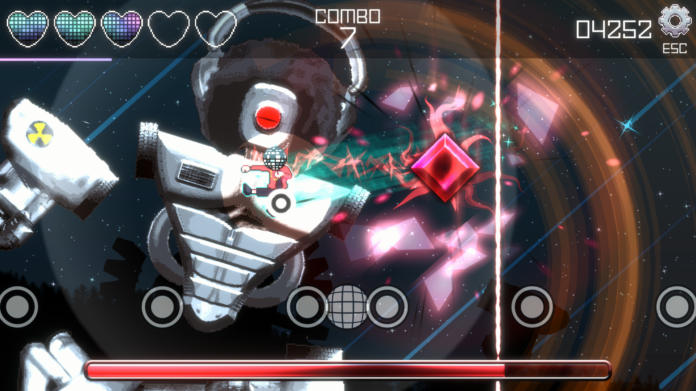
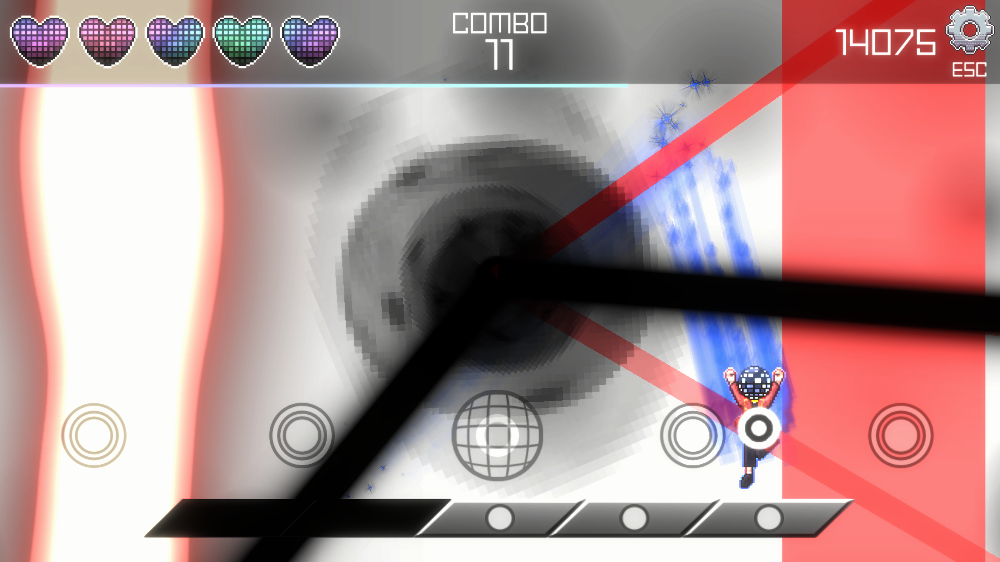

「殴って壊してリズムに乗れ！」
リズムに乗りながら敵を倒す「感触」を意識した、リズムアクションゲーム！
日本ゲーム大賞2022アマチュア部門に向けての作品。
| ジャンル | リズムアクション |
|---|---|
| 対応機種 | PC |
| 制作人数 | 3人 |
| 担当・役職 | チームリーダー 音ゲーのシステム、ツール制作、グラフィック全般を担当 |
| 制作開始年度 | 3年生 |
| 制作期間 | 2022年2月3日～2022年5月31日 |
| Download | (コンテスト終了まで外部へのアップロードは禁止) |
|  |  |  |
|---|---|---|
|  |  |  |
コンテストに向けてのチーム開発は初めてで、チームリーダーということもありプレッシャーを感じていました。
しかし、チームメンバーと仲良くなるにつれて、プレッシャーよりもチーム制作の楽しさのほうが勝るようになり、そこからは順調に事が運ぶようになっていたと思います。
今までの個人制作で一番辛かったことが、「自分のゲームについて本気で考えてくれる人がいない」ということで、レベルデザインの調整ミスが目立ってしまいました。
今回はチームメンバー一人一人がこのゲームに向き合い、本気で取り組むことができたので、今までのゲームと比べてクオリティはかなり高くなっていると思います。